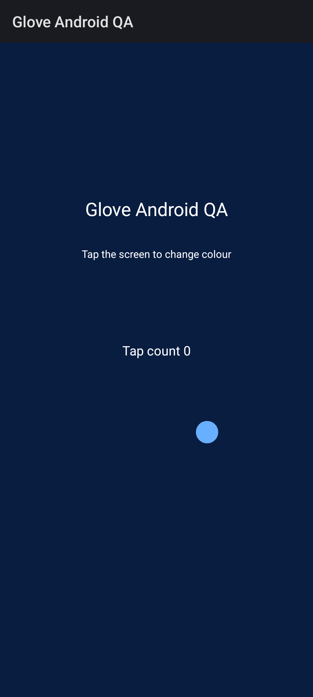
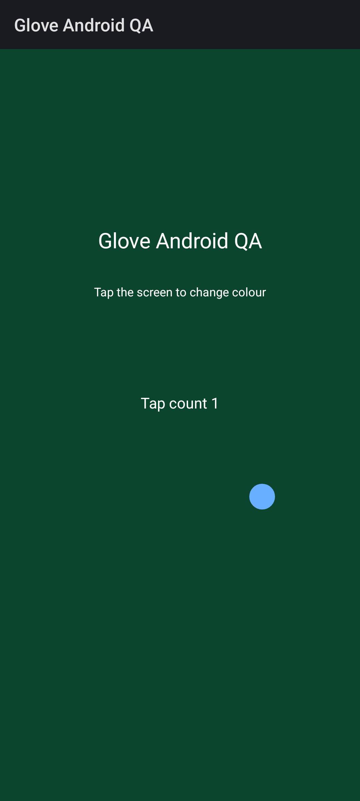

See Glove in action
Watch a real Android emulator mirror, see a tap sent by an MCP client, and check what reached the other end of a file transfer.
Android screen mirroring
Play a 3.2-second recording of a test app mirrored with scrcpy. The test used Android 16 on an emulator connected through local ADB.
- Device
- Android 16 emulator, API 36
- Mirror
- scrcpy 5.0.1
- Video
- 864 × 1920 H.264, 126 frames
MCP screenshot, tap and recheck
A local MCP client captured the test app, sent one tap, and captured the screen again. The test app changed colour and its tap counter moved from zero to one.




Byte-exact file transfers
An Android test fixture uploaded and downloaded separate files through Glove’s file sharing service. The saved byte counts and SHA-256 digests matched the source data in both directions.
- Windows → Android
- 8,388,645 bytes
- SHA-256 matched after download.
- Android → Windows
- 8,388,645 bytes
- SHA-256 matched after upload.